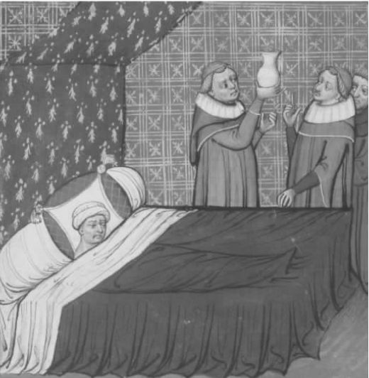
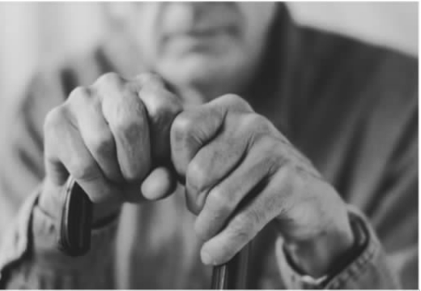
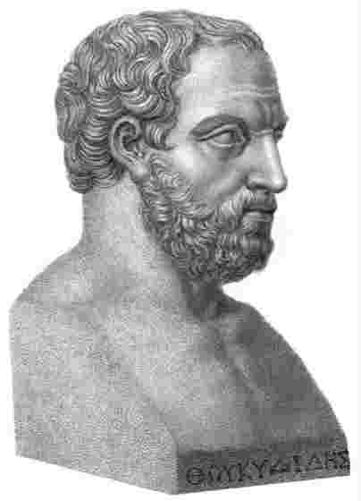
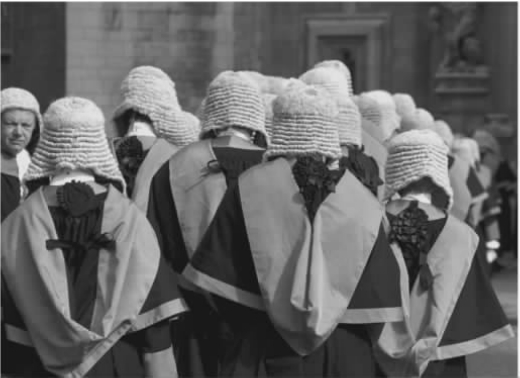

（伊曼努尔·康德）
如我们所见，医学伦理学处理的是一些关于生死的大问题。它面临自然和人为的特殊情况：连体婴、疯癫、辅助性生殖、克隆。如果你对医学伦理学的理解都是基于报纸头条的案例，你可能会认为这只是一门怪诞的学科。
在日常医学实践中，即使平常如治疗血压升高，医生对此也要做出伦理价值的判断。例如血压升到多少患者才应接受治疗？普遍的观点可能认为，对于轻度高血压的治疗会防止很多人中风。对个人而言，降低一点点中风风险与治疗的副作用相比，根本就算不上什么。哪些因素应该影响高血压疗法的选择？医生应该透露多少可能的副作用？会否有这样的危险：如果提到一些可能的副作用如疲乏，患者会宁愿忍受这些副作用？医生应该接受主要降血压药物厂家的免费晚餐吗？这会不正当地影响他开的处方吗？
在这最后一章中，我想讨论一下多数家庭医生不得不面临的两种情况。道德问题并不源于任何现代技术，而是源于一个对健康专家来说再熟悉不过的问题：家庭成员之间很少享受到简单的、轻松的、持续快乐的关系。20世纪50年代以来的广告也许会让你期望这种关系。

图28 伦理学问题来源于日常医学实践。
16世纪的散文家蒙田，一个写男性阳痿如同写教育孩子一样自如的男人，在他书房的木梁上刻有57条格言。其中包括泰伦斯的一条大胆陈述，该陈述或许应该被刻在医生的听诊器上：“人性的东西我都不陌生。”尽管很难实现，但是对那些工作目的是帮助人们渡过难关的医生来说是有价值的鼓励。对人性弱点的容忍（也许甚至是偏爱——康德的人性曲木说）对健康专家来说是重要的美德。
（莎士比亚，《终成眷属》，第四幕第三场，68—71行）
当家庭医生面临以下情形时应如何做呢？
C先生是一位患有痴呆和慢性肺病（慢性梗塞肺病）的70岁老人，他在家由72岁的老妻照顾。由于经常性的胸腔感染，他需要抗生素治疗；由于肺部疾病，他在家需要输氧。最近一次胸腔感染用抗生素药片没有起到很好的效果，他的整体状况在恶化。他吃不下东西，喝得也很少。在医院的治疗下，包括静脉注射抗生素和物理疗法，他有可能从这次的感染中恢复过来，尽管以后还会发生类似的感染。因为他不善于适应变化的环境，所以以往住院的经历使他痛苦不堪。然而他的妻子认为他应该住院以接受最充分的治疗。
假设你是医生，你认为C先生留在家里治疗更符合他的最大利益，而且也更舒服。他有可能很快会在家里死亡，但是不管怎样，几个月后他总会死亡。由于痴呆，他现在的生活比以往要乏味得多。以他这种状况，再多活几个月并不值得，特别是考虑到入院将会给他带来的痛苦。
你认为对他来说留在家里最好，他的妻子想要他住院。你会怎么选择？

图29 在家里还是医院？谁来决定？怎样决定？
在这种情形下，有几种通常的变化。
变化1
C先生的妻子同意你的观点，认为让C先生留在家里最好，但是跟他们住得很近的女儿则坚持父亲应该去医院以尽量争取从这一阶段的感染中恢复过来。C先生看起来部分被女儿说服了，或者说有点被胁迫的意思。
变化2
你是医生，你认为如果C先生去了医院，他将会恢复到通常的健康水平并再活上一年或更久。你认为他的生活虽然由于痴呆而受限制，然而仍是快乐的。这部分是由于他的妻子将他照顾得非常好。你认为去医院最符合他的最大利益，但是他的妻子说不想他从家里搬走。她想要看护他，即使他不久将要死亡。或许这也是他想要的。
在这两种情形下，你应该如何判断怎么做是正确的呢？在本书中，我已经强调了理性分析。这种方式要求首先判断出哪些问题是重要的。例如，此案例及其变化中提出的一些问题如下：
1.C先生自己是否能形成并表达观点。这主要取决于痴呆造成的损害程度。
2.如果C先生目前不能形成观点，是否有可能对其在这种情形下的需求做出判断？
3.C先生的最大利益是什么？如果C先生自身能做决定，那么他关于什么是自己最大利益的看法应该取胜，但是如果他不能为自己做决定，医生就必须提出怎样做最符合C先生的最大利益。这也许是一个难题。是否有这种危险：医生相信由于痴呆，C先生目前的生活不值得再过下去，因此舒适地留在家里对他更好？或者危险是反方面的：医生认为治疗感染使C先生活下去是必要的。健康人要如何判断痴呆患者的感觉呢？
4.医生是应该将C夫人的最大利益也考虑进去，还是应该只着眼于患者的最大利益？
5.因为C夫人是近亲，她是否有权利决定应该对C先生做什么呢？
6.在家庭内部有不同意见的案例中（例如C夫人和她女儿意见不同），医生是否应该偏重于一个人的意见，例如C夫人的意见？在什么样的情况下或基于何种理由可以这样做呢？
以上列出的问题只是分析的开始。之后问题将上升到如何平衡不同方面，但是从这样的分析开始有着绝好的意义。
另一种分析方法是谈判。很多临床医生不是先开始分析而是先开始讨论。这些医生会先开始问C夫人为什么她认为C先生应该住院。对这些医生来说，重要的是了解所有关系者的需要、愿望和观点，避免冲突，力求达成一致决定：当然这不可能总能实现，但是如果有技巧和耐心，这种方法经常能奏效。换句话说，这种方法牵涉到主要人物之间的谈判。这是一种我们在日常生活中所熟悉的方式，就像很多家庭决定在星期日下午做什么一样。
运用分析和谈判来作决定的区别并不是绝对的。两者都需要分析和讨论。但是它们是不同的。谈判给医学伦理学引入了一种我在本书其他部分尚未谈到的观点。让我自嘲一下，本书的大部分内容将医学伦理学视为通过推理研究出正确行为的课题。推理过程会很复杂，其中涉及多种方法。不同的问题需要不同的工具。但是此观点从本质上将医学伦理学视为一项个人主义事业：由个体来决定该做的正确的事情。谈判方法认为医学伦理学——实际上对一般伦理学也适用——本质上为人与人之间交流的过程。
当患者尚未成年时，健康专家与患者家庭接触的方式更加复杂。现在我将考虑另一种家庭医生熟悉的情形：15岁怀孕女孩的案例。
一个15岁少女在学校朋友的陪同下胆怯地来咨询她的家庭医生，她觉得自己怀孕了。检查显示确实如此：怀孕大约10周。她想要流产，并且坚决不想让父母知道。
家庭医生当然应该跟她交谈，尽管有一个直接问题：她朋友是否应该在场。有了支持和善意的关怀，怀孕少女也许会同意其父母参与讨论。即使这样，医生也会面临伦理难题，例如有关流产本身的大量问题。假设该医生对流产有强烈的道德抵制，但在他工作的国家，这种情形下的流产是合法的。如果少女及其父母都要求他推荐妇科医生做流产手术，医生该怎么办？如果要试着说服家庭成员改变主意，他应该要有多少说服力？或者只是基于他的道德责任将问题告诉他们让他们自己决定？
因此，在此案例背后潜藏的复杂问题包括流产的伦理问题和当医生面临专业职责和个人伦理观的冲突时应该怎么去做。
但是这两个问题都不是我想强调的。我想关注的是在父母不知道的情况下，医生是否应该介绍少女做流产手术。女孩有保密的权利吗？父母有权知道吗？
图30 一个15岁少女怀孕了，但是不想让她父母知道。医生应该替她保密还是告诉她父母？（图为模特）
修昔底德的《伯罗奔尼撒战争史》写于公元前5世纪，对那些喜欢实践推理的人来说，这是一本珍贵的收藏品。在对邻国发动战争前，雅典城民需要能站得住脚的论证——这与现代吵闹的民主政治多么不同。每一方都有时间论辩而不被打断。在高级法庭的法律判决中，我们仍然能看到这种标准的伦理推理的口头传统。
对于16岁以下的孩子，父母的权利和医学同意书是英国法律判决的核心：吉利克案例。

图31 a修昔底德的胸像。

图31 b伦理推理的口头传统在写于2500年前的修昔底德的《伯罗奔尼撒战争史》中得到了绝妙的展示；这一传统至今还很好地保留着，现在还能在英国上议院中找到。
事实
在英国，20世纪80年代初负责国家医疗保健服务（NHS）的政府部门——卫生和社会安全部（DHSS）——向医生发表了关于家庭计划服务的书面建议。这个建议包括两条陈述。
（a）如果医生为了保护一个16岁以下少女免受性交的有害影响而给她开避孕药，这是不违法的。
（b）正常情况下，医生只能在父母的同意下给16岁以下的少女开避孕药，并且应该劝说少女让她的父母知道。然而，在例外情况下，如果医生的临床判断认为开避孕药处方是必要的，可以在不经咨询父母或得到他们同意的情况下开药。
平民维多利亚·吉利克夫人曾寻求这样的保证：当她的女儿们在16岁以下未经她知道并同意时不能被给予避孕药。NHS的相关权威人士拒绝给予这样的保证，声明问题部分在于医生的临床判断。吉利克夫人因此以未经父母同意允许医生向16岁以下少女提供避孕药的建议是违法的为由，对DHSS采取了法律行动。
案件最终在英国最高法庭（相当于美国最高法院）——上议院开审。五位法官听审了案子。法官们没有达成一致意见。最终决定采取少数服从多数的办法。每一位法官递交他的判决，给出他的决定及其理由。法官们回答的是何谓正确的合法立场，而不是这个问题：什么是伦理上正当的？尽管如此，该判决仍是极好的伦理学推理案例。
判决
布兰顿勋爵站在吉利克夫人这边。事实上他走得更远。他总结，即使在父母知情并同意的情况下，给16岁以下少女开避孕药也是违法的。他的论证概括如下：
1.法律事实是一个男人与一个16岁以下少女发生性关系，即使是在该少女的同意下，这也是违法的（依据英国法规）。
2.鼓励或协助犯罪也是犯罪行为。
3.给少女开避孕药或给予避孕建议涉及鼓励少女与男人发生性关系。这等同于鼓励犯罪。
4.一些人也许会争辩说，有些少女不管是否有避孕药都会发生性行为，在这种情况下开避孕药并不是鼓励性行为。但这是错误的，原因有两条。第一，少女寻求避孕药说明她知道不必要怀孕的风险并且潜意识里因此而不想有性行为。因此，布兰顿争辩说，如果给予避孕药，她和她的伴侣会更容易“纵容他们的欲望”。第二，如果法律允许16岁以下少女在使父母和医生确信不论怎样她都会发生（违法）性关系的情况下取得避孕药，那么她会勒索或威胁父母和医生以实现自己的目的。布兰顿写道：“法律对于这样的威胁的唯一答案应该是‘等到16岁’。”
坦波曼勋爵也支持吉利克，尽管他持有的观点与布兰顿勋爵不同。他认为，如果医生和父母都认为16岁以下少女持有避孕药符合她的最大利益，那么这就不一定是违法的。他相信当一个少女不能被阻止发生违法性行为的时候，提供避孕药是为了帮助避免不必要的怀孕而不是鼓励或协助违法行为。
但是他认为，在没有父母的同意下，医生不具备提供避孕药的临床辨别力。他的观点有四个论据。
1.16岁以下少女不能保证会避孕。他写道：“我怀疑16岁以下少女是否能就……性行为给出合理的判断。”他给出法律方面的理由来支持此观点。他论辩说，既然男人即使在16岁以下少女的同意下与其发生性行为都是违法的，法律必须认为这样的避孕保证是无效的。
2.没有来自父母的信息，医生永远不能正确地判断提供避孕药是否符合少女的最大利益。
3.父母的职责之一是通过劝导、利用家长的权威或者向相关男人施压来保护其子女免于违法性行为。如果医生没有通知父母就提供避孕药，那么他在干扰父母实施职责的能力。
4.父母由于身为父母有权知道。
对医生来说，为少女保密“将会构成对父母做决定的权利”以及“通过控制、指导和建议影响少女行为的家长权利构成违法干涉”。
“对一个16岁以下少女来说有很多事要实践，”他说，“但是性并不是其中之一。”我想他可能指的是钢琴练习。两位法官偏向吉利克了，还剩三位。
弗雷泽勋爵不同意前面两位法官和吉利克的观点，倾向于DHSS的观点。他分离出了争论的三个方面。
1.16岁以下少女是否具有有效同意避孕建议及治疗的法定能力。
2.未经父母同意向16岁以下少女提供这样的建议和治疗是否侵犯了父母的权利。
3.未经父母同意向16岁以下少女提供这样的建议和治疗的医生是否要承担刑事责任。
他逐一考虑了这些问题。在是否有法定能力提供有效同意的问题上，弗雷泽勋爵考虑了大量的立法条律，总结出没人提供过合法依据来证明16岁以下公民缺乏签署医学治疗同意书的能力，包括避孕药治疗。从坦波曼勋爵的论证中，他得出了相反的结论。他争辩说，“16岁以下少女能充分有效地同意性行为，使得与其发生关系的男性并不构成强奸罪”（尽管他还是犯了轻一点的罪）。
弗雷泽勋爵争辩说，父母控制孩子的权利的合法基础在于
在考虑了以上多种判决后，弗雷泽勋爵继续写道：
他反驳了布兰顿勋爵所谓的向16岁以下少女提供避孕药或避孕建议的医生因为协助和教唆违法性行为而违反了《性侵犯法案》（1956）。
在16岁以下孩子的能力问题上，斯卡曼勋爵比弗雷泽勋爵考虑得更为具体：
他总结说，遵循DHSS的指导不会使医生侵犯到父母的任何权利。
斯卡曼同意弗雷泽的观点。还剩一个观点了。
布里奇勋爵提出了一个其他法官没有直接涉及的问题。他考虑了在存在伦理和社会问题的案例中（正如在审理的这个案件），法律判决的角色。他写道：
给了上述警告后，他与布兰顿勋爵持相反意见并同意弗雷泽和斯卡曼勋爵的意见。
DHSS赢了，吉利克输了：三比二。